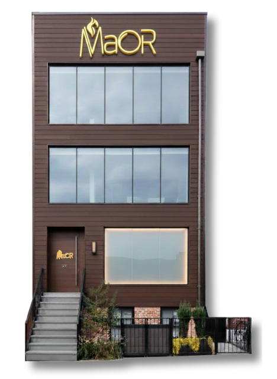

Maor presents the Rebbe's sichos and maamorim to kids in a way they truly live with.
Partner to help Maor scale so every Jew becomes part of bringing Moshiach.

The Rebbe gave us a clear directive: prepare the world for Moshiach. But right now, we are leaving too many kids behind because they are missing the lifeblood of Chassidus.
They think Yiddishkeit is a checklist of mitzvos to avoid a punishment from Hashem. When they struggle with the yetzer horah, they internalize it, thinking, "I'm a bad kid." They are missing the joyous tools to overcome challenges.
To the non-frum child, Judaism is just an interesting culture or a flavor. They are living without the deep meaning and taste of Yiddishkeit, entirely unaware of their ultimate purpose.
For the non-Jewish child, they are not aware of why they are created and what is their mission in life.
We use high-quality video storytelling to grab a child's curiosity. We are more engaging than just "teaching." This style breaks down barriers, allowing the Rebbe's lessons to fundamentally change their mindset. They realize they are Hashem's beloved children, armed with the exact tools they need to succeed in their daily lives.
We need to reach every single child. To do that, we are launching two monumental projects.
The numbers above are not projections — they are happening right now.
We are not starting from scratch. We have the data and the audience to prove this works. By expanding into the broader frum and non-frum markets with these new capabilities, we project our reach will double in the next five years.
Built to sustain itself.
We believe in creating systems that sustain themselves. Strategic donor partnerships fund the launch. Once operational, the system pays for itself — through subscriptions and product sales across new market tracks, Visitor Center admissions, building rental income, and licensing of our kosher AI-generation system to aligned organizations.
The stakes.
A generation of children growing up shaped by secular media instead of the Rebbe's wisdom — disconnected from their role in bringing Moshiach.
Every single Jew educated, uplifted, and equipped with the mindset to change the world.